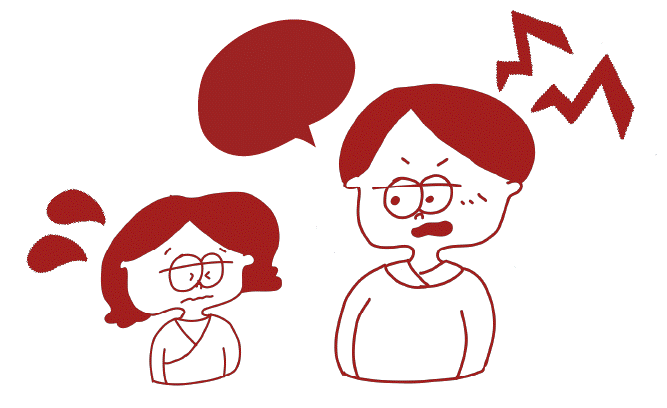

私：まず20代の時に1番試練だと感じたことは何だったの？
20代はまだ楽しい時ですね。
まだ私も学生時代ですわ。
親は一生懸命教育資金をちゃんと送ってくれたけど、
勉強はあんまりしていなかった。
ただ楽しいことばっかりして、
すごい幸せだった。
うんうん。
将来自分がどんな風になるかっていうのは、
あんまり考えなかった。
まだ子供でした。
私はもう本当、親にべったり甘えてたというか、
なにも考えてなくて、
20代は楽しいことが1番だと思ってました。
そうだったんだ。ちょっと意外かもしれない、、。（笑）
そうでしょ？（笑）
そしたら、、
夏休みの時に、お見合いしたら？って言われたの。
「えー、お見合い。お見合いって何。」
って感じだった。
鹿児島の城ケ崎ホテルっていうホテルで
美味しいものが
食べられるって電話でいうもんですから。
美味しいものにはつられちゃうよね（笑）
ね。
あっちの方は、お母さんとその息子が来て、
ランチを食べて
そのあとにすぐ結婚っていう流れでした。
ただ、お見合いっていうのは
こんなもんなんだと思ったの。
あっちは27歳で、まだ若かった。
九州大学の医学部の、当時で1番優秀な人。
その夏にお見合いして、 春に、結婚ってなったの。
お見合いで出会ったって初めて知ったからびっくり。
結婚したら、もう苦しいことばっかりでしたな。
昔式で、封建式で、洗面器をたらいって言うんだよね。
洗うものも別々で、
竿を1番上は男のものを干し、
下の方に女のものを干すという決まりもあった。
そうなの！？
そう。鹿児島の人やから、
宮崎でのほほんと過ごしてた私にとっては
ショックだった。毎日が涙を流しながらの生活で、、
20歳はもうひっくり返ったのよ、
女の子だったから親から愛されて楽しく過ごしたのが、
一遍にもう地獄のとこにやられたような感じ。

なるほど。
結婚して、それからは
地獄だったということだったんだ。
隣県なのに、違う文化があったんだね。
西郷さんの感じで、やっぱり日本人は
昔の封建的な考え方があったの。
今の人は20歳にして頑張って、
自分の免許をで取得するじゃないの。
たしかに。。
でも昔は大学卒業の人は少なかったわ。
3分の1ぐらいだったな。
正しいところは、やっぱり博物館とか、美術館とか、、
美学美術史学科だったから、
絵をね、見たりして、
博物館も学芸員っていうのを取るんだよね。
博物館に1ヶ月ぐらい研修で行って、
小学芸員は卒業する前になれたんだけどね。
だけど結婚のために大学3年で
辞めたっていうことです。
じゃあ、結婚のために大学を大学3年で
辞めることになってしまったんだ。
はい。4月に結婚だったから、
ちょっと他の人とは違う人生かもしれない。
だけど、結局、結婚したら、その人はね、
「俺には教授から、娘をもらってくれ、
だとか、いろんな話があった。
だけど、俺はお前をもらってやったんだ。」
って言われました。
すごく素敵な話じゃない？
いや、それが悪い話だから。
そうなのか、、
大学院で研修医をやっていたんだけど、
研修だから、給料あんまりないのよ。
だから、親のとこからお金を送ってもらえって
言われていたの。
本当、苦しかった。毎日1000円持って
お買い物に行って、
1000円で食料品を買って毎日の生活をしましたね。
すごく大変そう、、
ぼやきはしたけど、やっぱり
自分の決断で決めたわけだから。
結婚も親が決めてくれたけど、
結局自分も資格とかを
何も持ってなかったから。
それこそ、大学中退したから。
だから、やっぱりもうその旦那さんの言うことを
聞かないと私は生きていけなかった。
そうだったんだ、、